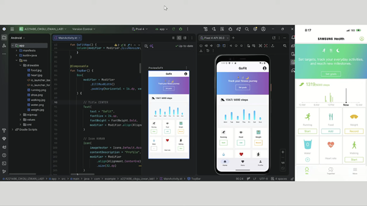
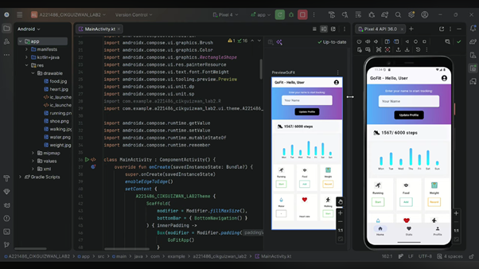
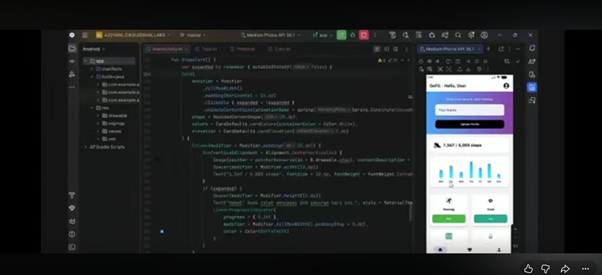
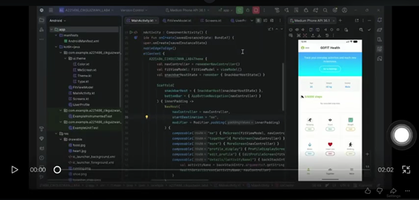
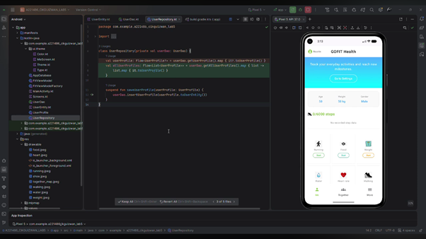
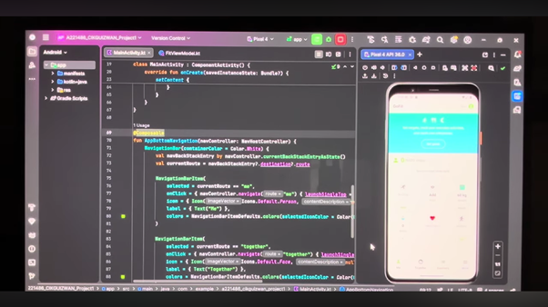
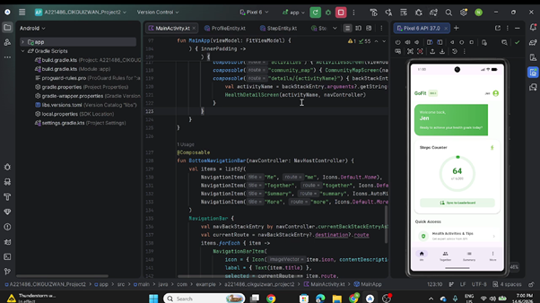
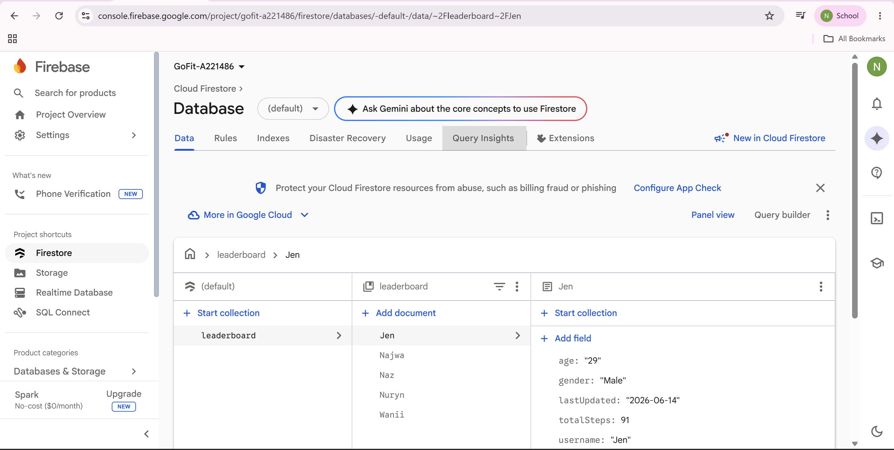

👤 Student Profile & Learning Goals
I am a passionate computing student focused on developing functional, high-performance mobile applications. My goal for this course is to master mobile system architecture, offline-first data caching using Room, real-time cloud synchronization via Firebase, and harnessing on-device sensor streams to solve real-world sustainability challenges.
🧪 Lab Submissions
Lab 1: UI Components
Introduction to the core fundamentals of declarative interface rendering.

Reflection: Learned the core fundamentals of Jetpack Compose, handling modifiers, and creating structured, clean declarative user interfaces without XML.
Lab 2: Interaction
State management and capturing active user events dynamically.

Reflection: Mastered state management, state hoisting, and event handling within Composable functions to dynamically update the view layout.
Lab 3: Material Design
Applying structural visual themes, typography patterns, and dynamic palettes.

Reflection: Implemented Material 3 design principles, custom dynamic color themes, robust typographies, and premium card structures for an elevated user experience.
Lab 4: App Navigation
Constructing central routing graphs and transferring structural data arguments.

Reflection: Setup the NavHost controller, declared app navigation routes, and practiced passing primitive data arguments safely between distinct screens.
Lab 5: Room Database Local Storage
Structuring offline SQLite systems using safe ORM entities and active DAOs.

Reflection: Learned to establish localized SQLite operations by creating database schemas, Entities, and DAOs, followed by runtime data verification via Android Studio's App Inspection.
📱 Project Milestones
Project Part 1: Core Navigation & State Flow
Theme Base Framework (5 Screen Architecture)

Lessons Learned: State architecture must be decoupled cleanly into a lifecycle-aware ViewModel so that critical user inputs remain persistent across standard application configurations.
Project Part 2: Advanced Data, APIs, & Sensor Integration
Application Identity: GoFit (Expanded 10 Screens)


Project 2 Architecture Pillars:
- Room DB Local Storage: Caches background step counter metrics permanently for offline access, ensuring Zero-Data-Loss even when the app process is terminated.
- Retrofit (Web API Interface): Constructs non-blocking network asynchronous tasks to extract remote fitness data and inject runtime fail-safe fallbacks for offline stability.
- Firebase Firestore Engine: Uploads dynamic telemetry, enabling global cloud documents to smoothly stream ecosystem updates onto the community leaderboard screen instantly.
📈 Reflection & Learning Journey
Growth & Technical Challenges:
Progressing from static single-view components in Lab 1 to advanced background hardware routines in Project 2 drastically evolved my software engineering capabilities. The steepest challenge was managing asynchronous data streams and resolving security clearance issues for foreground components. Overcoming these blockers taught me efficient lifecycle scoping habits.
Socio-Environmental SDG Impact:
GoFit empowers society toward SDG 3 (Good Health) by gamifying steps natively via on-device hardware and broadcasting shared fitness targets to communities—fostering holistic long-term lifestyle changes.
🛠️ Technical Stack Mastered
Resources, References & Acknowledgements
• Official Google Android Developers documentation repository (Declarative Compose structures, Entity Room design specs, and Architecture Lifecycle guidelines).
• Firebase Cloud Firestore client-side SDK integration standard protocols manual.
• Retrofit 2 type-safe HTTP interface framework manuals & JSON mapping tools.
• Generative AI assistance engine acknowledged for optimization workflows on interface compositions and dynamic connection fallback schemes.